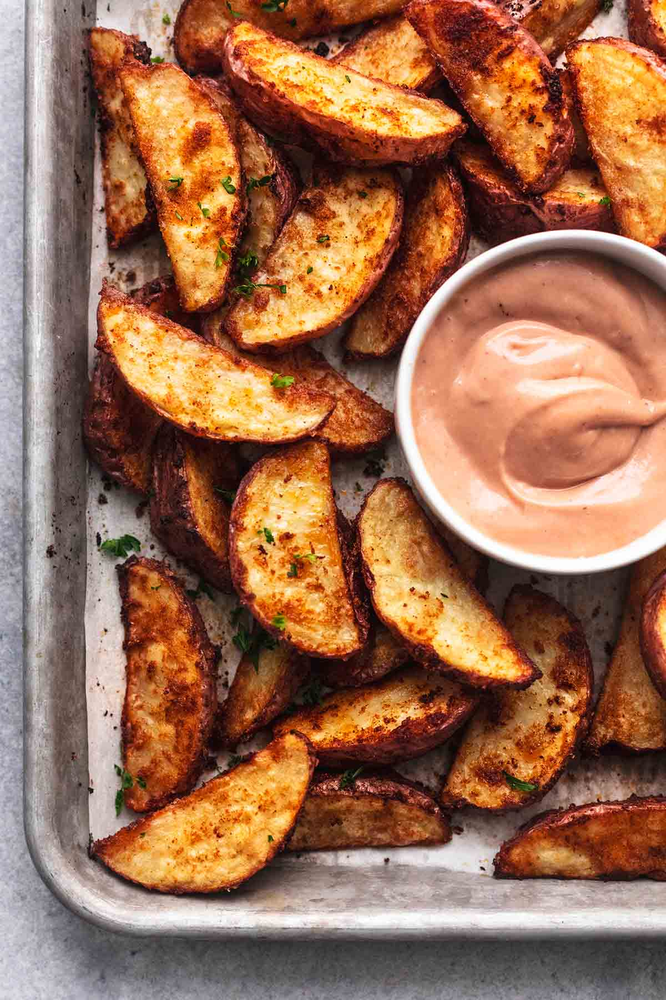

Potato Wedge Recipe

Description
Super easy, crispy oven-baked potato wedges with a savory-seasoned outside and fluffy inside, served with the most amazing two-ingredient sauce!
Ingredients
- 2 pounds red potatoes
- 2 tablespoons oil
- 1 teaspoon salt
- 1 teaspoon smoked paprika
- 1 teaspoon garlic powder
- 1/2 teaspoon onion powder
- pinch black pepper
Dipping Sauce
- 1/3 cup mayo
- 1/3 cup bbq sauce
Steps
- Preheat oven to 450 degrees. Line a large, rimmed baking sheet with parchment.
- Cut the potatoes into about 8 wedges (They should be less than 1/2 inch thick on the wide edge, if your potatoes are larger, cut any larger wedges in half again). Pat the potato wedges dry with paper towels to absorb excess starch.
- In a large bowl, combine potato wedges and oil, toss to coat.
- Stir together salt, paprika, garlic power, onion powder, and pepper. Sprinkle over potato wedges and toss to coat.
- Transfer potato wedges to your prepared baking sheet, arranging them in a single layer so they aren't overlapping, and doing your best to have them not touching (it's fine if some of them are).
- Bake for 15 minutes. Remove from oven, turn over the potato wedges with fork or tongs. Return to oven for 15 minutes. While potatoes are baking, stir together mayo and bbq sauce. Potatoes should be appear browned and crispy on the edges and be fork-tender. Serve with dipping sauce.